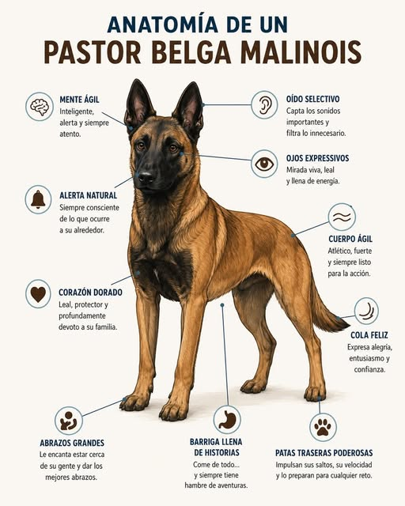

El Pastor Belga de Malinois
Un Aliado Incansable en las Fuerzas de Seguridad
Breve descripción
El Pastor Belga Malinois se ha consolidado como la raza
predilecta para las unidades tácticas y de seguridad de todo
el mundo. Destaca por su extraordinaria inteligencia, agilidad,
lealtad e instinto de trabajo. Su capacidad de respuesta inmediata
y su firmeza lo convierten en un elemento indispensable
en misiones críticas.

alt="Imagen de un Pastor Belga Malinois" title="Pastor Belga">
Club del Español del Pastor Belga
Lista de Características Principales.
-
Agilidad e Inteligencia:
Gran capacidad de aprendizaje y adaptación a entornos complejos.
-
Instinto de Protección:
Alto impulso de presa y firmeza en la custodia y defensa.
- Resistencia Física:
Preparado para jornadas intensas de trabajo y condiciones exigentes.
Pasos en su adiestramiento.
Fases del Adiestramiento Táctico
-
Socialización y Obediencia Básica:
Control de impulsos y respuesta ágil a las órdenes del guía.
-
Especialización en Trabajo Canino:
Formación en detección de sustancias,
búsqueda y rescate, o intervención táctica.
-
Integración en Servicio:
Prácticas operativas en escenarios reales e incorporación a las patrullas.